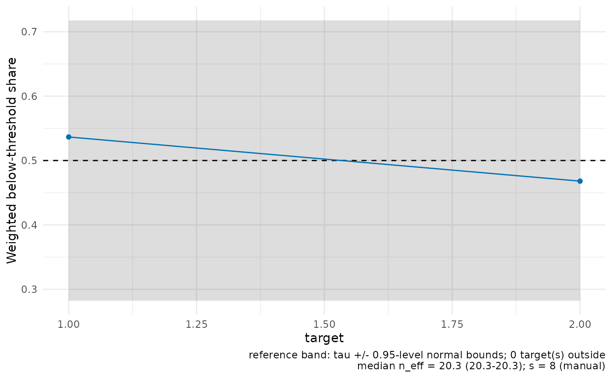

Plot local quantile calibration for PLQR fits (experimental)
Source:R/plot-calibration.R
plot_calibration.RdFor each target, the weighted share of observations below the quantile
threshold, sum_i w_ij 1{Y_i <= D_i' theta + g_i}, is plotted against
the nominal level tau with a reference band
tau +/- z * sqrt(tau (1 - tau) / n_eff). Shares outside the band flag
local miscalibration of the supplied theta_eval or first stages — the
applied reading of the quantile moment condition.
Details
The below-threshold indicator is stored on the fit; alternatively,
supply residuals (Y - D' theta - g, length n), whose non-positive
entries define the indicator.
Lifecycle
Experimental. PLQR functionality is outside the CATE and regression workflow focus of the initial public release. Its API and inference interfaces may change in later releases.
Examples
if (requireNamespace("ggplot2", quietly = TRUE)) {
demo <- plqr_demo_data(n = 90, p = 2, p_d = 2, tau = 0.5, seed = 1)
df <- demo$data
fit <- plqr_dnn(
X = as.matrix(df[paste0("X", 1:2)]),
D = as.matrix(df[paste0("D", 1:2)]),
g = as.numeric(df$g_oracle),
mD = as.matrix(df[paste0("mD", 1:2)]),
Y = as.numeric(df$Y),
theta_eval = demo$truth$theta_true, tau = 0.5,
X0 = rbind(c(0, 0), c(0.5, 0.5)), k = 1L, s = 8L, se = FALSE
)
plot_calibration(fit)
}
